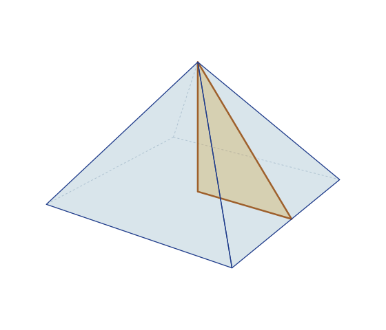

Kepler, Squaring the Circle & the Great Pyramid¶
The 1597 Kepler Right Triangle · Circle Quadrature · Old Kingdom 14:11 Seked & Polyhedral Duality
Geometria duo habet thesauros magnos: alterum est theorema Pythagorae, alterum sectio aequa ac media proportione. Primum auro comparare possumus, secundum gemmae pretiosae.
Geometry has two great treasures: one is the Theorem of Pythagoras, the other the division of a line into extreme and mean ratio. The first we may compare to a measure of gold, the second we may name a precious jewel.
—Johannes Kepler, Epistola ad Michaelem Mästlinum (Prague, October 1597)
καὶ τῆς ποιήσεως τῆς πυραμίδος… ἑκάστης δὲ τῶν τεσσάρων πλευρῶν εἶναι τὸ ὕψος ὀκτὼ πλέθρα, ἐούσης τετραγώνου, καὶ τὸ εὖρος ἴσον.
The pyramid was built such that the square on its vertical height equals the surface of each of its triangular faces, the base being square and four-sided.
—Herodotus of Halicarnassus, Histories II.124 (c. 440 BCE)
The Geometry of the Great Pyramid¶
Across the history of architecture, mathematics, and cosmology, no monument has provoked deeper geometrical inquiry than the Great Pyramid of Giza (the Pyramid of Khufu, Fourth Dynasty, c. 2570 BCE).
In the GEOMETOR symbolic framework, the Great Pyramid is investigated not through speculative numerology, but through exact algebraic geometry over certified field extensions:
The quadratic field \(\mathbb{Q}(\sqrt{5}) = \mathbb{Q}(\phi)\) of the Divine Proportion \(\phi = \frac{1 + \sqrt{5}}{2}\);
The quartic field \(\mathbb{Q}(\sqrt{\phi})\) generated by Kepler’s right triangle polynomial \(x^4 - x^2 - 1 = 0\);
The rational field \(\mathbb{Q}\) governing the Old Kingdom Egyptian seked ratio \(14 : 11\) recorded in the Rhind Mathematical Papyrus;
The transcendental perimeter quadrature relation \(h/a = 4/\pi\).
These four profiles converge upon nearly identical profiles within a fractional variance of less than one part in a thousand (\(< 0.1\%\)), uniting the Pythagorean theorem, the golden ratio, circle quadrature, and polyhedral duality.
Interactive 3D Great Pyramid & Circle Quadrature Studio¶
The interactive studio below mounts the exact symbolic engine of geometor.polyhedra. Use the preset buttons and parameter sliders to inspect the four geometric profiles and toggle internal geometrical armatures in real time:
Note
Interactive Codex Controls:
Four Profile Presets: - Kepler φ (\(h = \sqrt{\phi} \approx 1.2720\)): Golden ratio apothem \(s = \phi\) and Herodotus area equality \(A_{\text{face}} = h^2\). - Seked 14:11 (\(h = 14/11 \approx 1.2727\)): Khufu’s historical Old Kingdom design (\(280 \times 220\) Royal Cubits, Seked \(5\frac{1}{2}\) palms). - True π Quadrature (\(h = 4/\pi \approx 1.2732\)): Exact base perimeter circle quadrature (\(2\pi h = 8\)). - Half-Octahedron (\(h = \sqrt{2} \approx 1.4142\)): Equilateral triangular faces (\(s = \sqrt{3}\)) from Platonic solid geometry.
Continuous Height Slider: Drag \(h \in [1.000, 1.600]\) to observe dynamic deformation of dihedral angles and perimeter error.
Kepler Meridian Triangle (1, √φ, φ): Toggles the luminous gold interior right triangle spanning the base center, baseline midpoint, and apex.
Squaring the Circle (2πh = 8): Renders the horizontal base quadrature circle and vertical meridian quadrature circle (\(R = h\)).
Earth & Moon Cosmogram: Mounts the inscribed Earth sphere (\(r_E = 1\)) and tangent polar Moon sphere (\(r_M = h - 1 \approx 3/11\)).
Hollow Frame: Generates the mitered hollow frame manifold (genus \(g = 4\)) so interior triangles and quadrature circles remain visible inside the beams.
Golden Bipyramid: Reflects the pyramid downward across the square base \(z = 0\) to produce the 8-faced golden octahedroid.
Live Telemetry: Real-time readout of face slope angle \(\alpha\), apothem \(s\), perimeter discrepancy, and face area vs. \(h^2\).
Master Comparison of the Four Square-Pyramid Models¶
To isolate structural invariants, all models are normalized to unit half-base \(a = 1\) (base side \(2a = 2\), base perimeter \(P_{\text{base}} = 8\), base area \(A_{\text{base}} = 4\)):
Model Profile |
Vertical Height \(h\) |
Apothem \(s\) |
Lateral Edge \(e\) |
Slope Spread \(s_{\text{slope}}\) |
Slope Angle \(\alpha\) |
Dihedral Spread |
|---|---|---|---|---|---|---|
Kepler Golden |
\(\sqrt{\phi} \approx 1.27202\) |
\(\phi \approx 1.61803\) |
\(\sqrt{\phi + 2} \approx 1.90211\) |
\(\phi^{-1} \approx 0.61803\) |
\(51^\circ 49' 38''\) |
\(3\phi - 4 \approx 0.85410\) |
Seked 14:11 |
\(\frac{14}{11} \approx 1.27273\) |
\(\frac{\sqrt{317}}{11} \approx 1.61859\) |
\(\frac{\sqrt{438}}{11} \approx 1.90258\) |
\(\frac{196}{317} \approx 0.61830\) |
\(51^\circ 50' 34''\) |
\(\frac{85848}{100489} \approx 0.85430\) |
True π Quadrature |
\(\frac{4}{\pi} \approx 1.27324\) |
\(\sqrt{1 + \frac{16}{\pi^2}} \approx 1.61899\) |
\(\sqrt{2 + \frac{16}{\pi^2}} \approx 1.90293\) |
\(\frac{16}{\pi^2 + 16} \approx 0.61849\) |
\(51^\circ 51' 14''\) |
\(\frac{32(\pi^2 + 8)}{(\pi^2 + 16)^2} \approx 0.85445\) |
Half-Octahedron |
\(\sqrt{2} \approx 1.41421\) |
\(\sqrt{3} \approx 1.73205\) |
\(2.00000\) |
\(\frac{2}{3} \approx 0.66667\) |
\(54^\circ 44' 08''\) |
\(\frac{8}{9} \approx 0.88889\) |
Model Profile |
Apex Circle \(2\pi h\) |
Perimeter Discrepancy \(2\pi h - 8\) |
Face Area \(A_{\text{face}}\) vs. \(h^2\) |
Primary Invariant |
|---|---|---|---|---|
Kepler Golden |
\(2\pi\sqrt{\phi} \approx 7.99235\) |
\(-0.00765\) (\(-0.0957\%\)) |
\(\phi \equiv \phi\) (Identical) |
\(A_{\text{face}} = h^2 \iff 1 + \phi = \phi^2\) |
Seked 14:11 |
\(\frac{28\pi}{11} \approx 7.99680\) |
\(-0.00320\) (\(-0.0400\%\) / \(0\%\) at \(\pi = \frac{22}{7}\)) |
\(1.61859\) vs. \(1.61983\) (\(-0.08\%\)) |
\(2 \times \frac{22}{7} \times \frac{14}{11} = 8\) (Exact rational) |
True π Quadrature |
\(8.00000\) |
\(0.00000\) (\(0.0000\%\) Exact) |
\(1.61899\) vs. \(1.62114\) (\(-0.13\%\)) |
\(2\pi h = P_{\text{base}} \iff h = \frac{4}{\pi}\) |
Half-Octahedron |
\(2\pi\sqrt{2} \approx 8.88577\) |
\(+0.88577\) (\(+11.072\%\)) |
\(\sqrt{3} \approx 1.732\) vs. \(2.000\) (\(-13.4\%\)) |
Regular equilateral faces: \(\{3, 4\}\) half |
Perspective Projections: Elemental Solid & Leonardo Vacuum Frame¶
The 3D solid manifold of the Kepler Pyramid is rendered below in two Renaissance graphic traditions: the solid chiaroscuro projection highlighting the internal golden meridian right triangle, and Leonardo da Vinci’s hollow timber frame (pyramis vacua):

The 3D Kepler Golden Pyramid with internal meridian right triangle :math:`(0, 0, -h/4) to (1, 0, -h/4) to (0, 0, 3h/4)` rendered in luminous gold.¶

The Leonardo Vacuum Frame of the Kepler Pyramid (Pyramis Quadrata Vacua, genus :math:`g = 4`, aperture :math:`3/4`, shell thickness :math:`7/8`).¶
Structure of the Great Pyramid Codex¶
This monograph develops the geometry of the Great Pyramid across three rigorous thematic treatises:
The Kepler Right Triangle & Golden Surface Harmony: Euclidean compass-and-straightedge synthesis, Herodotus’s area law, the golden progression of pyramid surface areas, and the circumradius bridge to the Platonic icosahedron.
Squaring the Circle & the Earth–Moon Cosmogram: Perimeter quadrature, the algebraic bridge between \(\pi\) and \(\sqrt{\phi}\), Lindemann’s transcendence theorem, and the astronomical Earth–Moon tangent cosmogram.
Egyptian Seked Mensuration, 3D Spreads & Polyhedral Relatives: The Old Kingdom Royal Cubit and Rhind Papyrus Seked \(14:11\), exact 3D Rational Trigonometry dihedral and apex spreads, the 2D star net, Leonardo’s pyramis vacua, and the Golden Square Bipyramid.